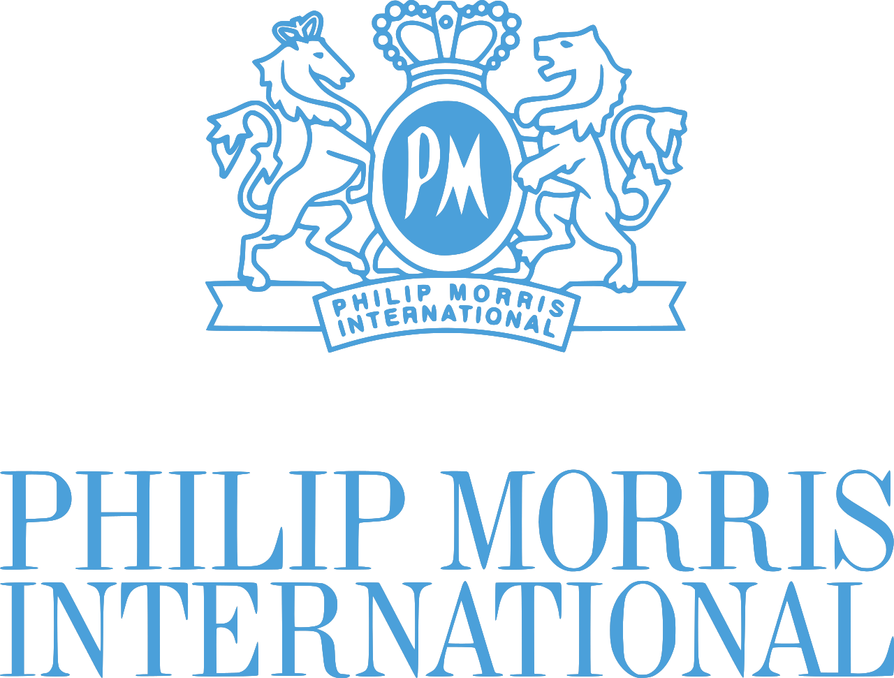

Professional Experience
In my work I've had the chance to visit more than 35 different factories around the world and run or participate in more than 20 industrial projects. Below are some of the most important ones covering many different topics, from coffee capsules to watches, from plastic parts to software.
2019 - present - Industrial Data Scientist, Nestlé, Switzerland
Providing Data Science support on Product Development, Quality equipment validation and Manufacturing Process Improvement. As part of the Digital Transformation team, contributing the development and implementation of Artificial Inteligence solutions for R&D.
- Sistematized the usage of reproducible research in data analytics activities by bringing teams from pure excel to using code based solutions.
- Developed and deployed a new risk management platform using Natural Language Processing.
Lead a team of 4 project managers for Nescafé Dolce Gusto at the STC. Engineering, prototyping, testing and industrialisation of capsule components. Expertise in injected and thermoformed polypropylene and EVOH rigid parts and laminated and coated flexible films in PET and Aluminium.
- secured full double sourcing by throughly analysing the complex 5 billion parts/year supply chain and industrializing existing capsule components at new packaging suppliers
- established and delivered a packaging cost reduction program achieving cumulated 25 mioEur savings over 3 years
2006 - 2012 - Senior Project Manager, Rolex, Switzerland
Coordinating specialists in watch engineering, quality and production. Overall project management from brief through development to market launch. Expertise in machined micro-mechanical parts in steel and silicon. Strong knowledge on production processes of stamped, PVD and electroplated cases, bracelets and dials.
- successfully launched 7 new watches over the years, including the innovative anti-magnetic Rolex Oyster Milgauss, all presented at the Basel World fairs

2003 - 2006 - SAP Plant Maintenance Team Leader, Philip Morris, Switzerland
Lead a team of 5 operations experts and 2 IBM SAP consultants. Advisor for the World Class Maintenance program. On site support in Holland, Germany, Argentina, Brazil, Russia and Lithuania.
- designed, developed and implemented the SAP Plant Maintenance solution for the Swiss Neuchâtel plant (300+ users on the shop floor)
- managed to launch the project 2 weeks ahead of schedule by successfully leveraging the capabilities of the IBM off-shore software development platform in India
Shift supervisor in 3x8h of ~100 persons (production, maintenance and logistics). Daily troubleshooting on the shop floor in order to achieve the factory output of average 40 million parts, while ensuring quality and safety standards.
Education and Training
Data Science- 2021 - Data Science with R, 650h intermediate program - EPFL (on-going)
- 2019 - Data Science with R, 89h introduction program - DataCamp
- 2017 - FMEA Failure modes and effects analysis - Ariaq, Yverdon
- 2016 - DOE Design of Experiments - Nestlé, Orbe
- 2015 - DMAIC Six sigma green belt project - DOQS, Neuchâtel
- 1998 - Master in Mechanical Engineering, Instituto Superior Tecnico, Lisbon - IST
- 2018 - Emotional Intelligence for Leaders - Nestlé, Vevey
- 2011 - PMP - Project Management Professional Certification - PMI